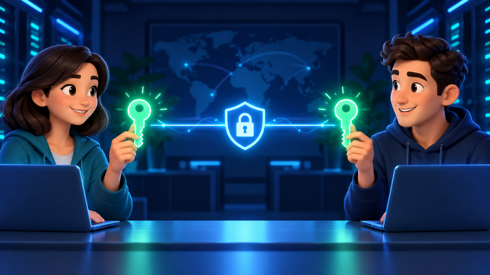
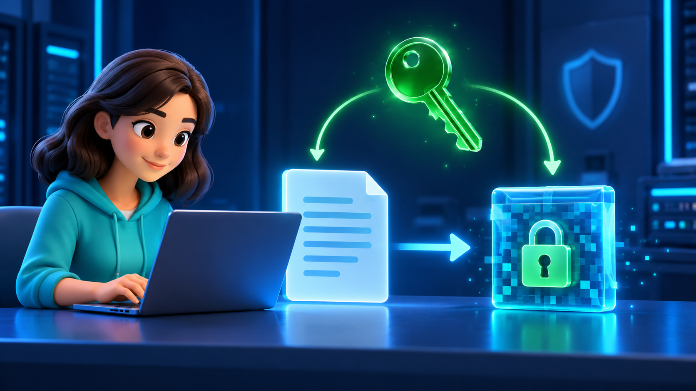
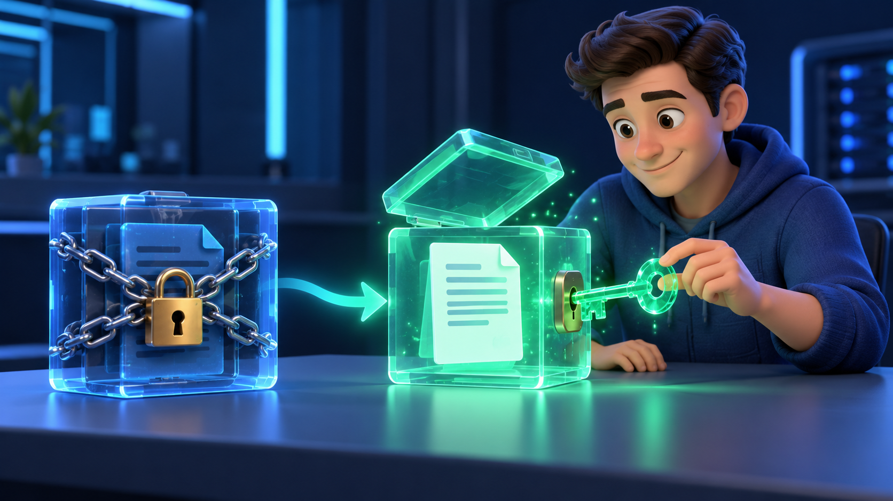
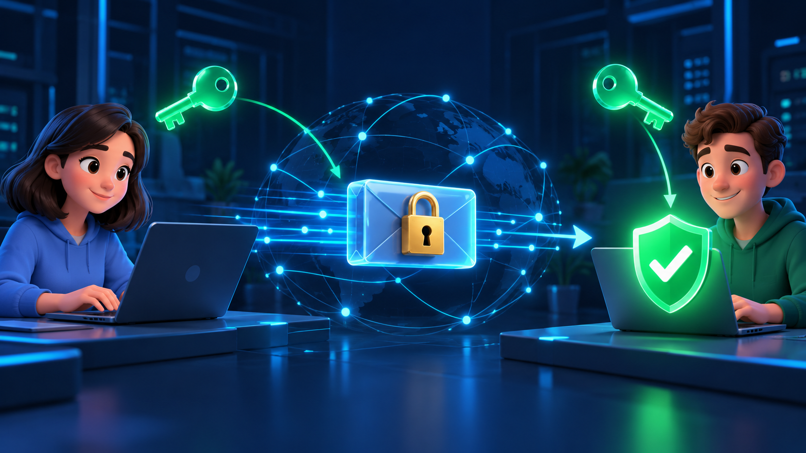

Criptografia Simétrica (AES-256)

Na criptografia simétrica, existe uma única chave. Alice e Bob precisam combinar essa chave antes de trocar mensagens. Ela foi gerada automaticamente: são 256 bits aleatórios.

Alice escreve a mensagem e usa a chave para cifrá-la. O resultado é um texto ilegível para quem não tem a chave.
Isto é o que um espião veria se interceptasse a mensagem. Sem a chave, ele não consegue ler nada.
Quer simular um ataque? Altere um caractere acima antes de avançar. No próximo passo, Bob vai perceber.
Ver detalhes técnicos
A mensagem enviada é a junção destas três partes:

Bob recebeu a mensagem cifrada e usa a mesma chave combinada no passo 1 para decifrá-la.
Para simular uma chave errada, altere um caractere da chave do Bob.

- A mesma chave foi usada para cifrar e decifrar: por isso é criptografia simétrica.
- O problema: como Alice e Bob combinam a chave sem que ninguém a intercepte? A criptografia assimétrica resolve isso.
- Cifre a mesma mensagem duas vezes: o resultado muda, por causa do IV aleatório.
- Se a chave estiver errada ou a mensagem for alterada no caminho, a decifragem falha.